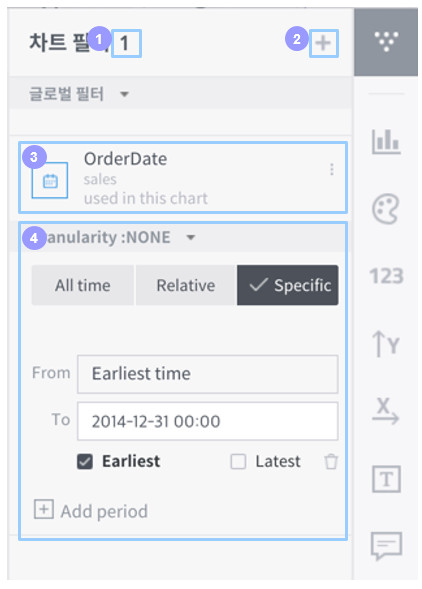

차트 필터¶
차트 필터는 각 컬럼별로 차트에 나타낼 데이터의 범위를 한정 짓는 기능을 합니다. 본 챕터에서는 차트 필터를 지정하고 활용하는 방법에 대해 설명합니다.
자동으로 포함되는 필터들¶
다음에 해당하는 컬럼들의 필터는 별도의 차트 필터를 추가하지 않아도 자동으로 포함됩니다.
타임스탬프 컬럼 필터: Metatron 엔진의 시계열 특성 때문에 시간 조건 필터링이 필수적으로 사용됩니다.
추천 필터: 데이터 소스 등록할 때 '추천 필터'로 지정된 컬럼 필터들입니다.
글로벌 필터가 적용된 대시보드: 해당 대시보드에 등록된 모든 차트에 공통적으로 적용되는 필터입니다.
차트 필터 패널¶
차트 홈 화면 우측에는 차트 필터 패널이 있습니다. 이 패널에서는 등록된 필터를 간단하게 조회·설정할 수 있습니다.

필터 수: 차트 패널 이름 옆에는 현재 적용된 차트가 몇 개인지 표시됩니다.
필터 추가/변경: 우측 상단의 '+' 버튼을 누르면 새로운 필터를 추가하거나 기존 필터를 세부 설정하는 팝업이 나타납니다.
필터 대상 컬럼: 개별 필터의 상단에는 필터가 적용되는 컬럼 정보를 보여줍니다.
필터 상세 설정: 개별 필터 우측 상단에 햄버거 메뉴를 누르면 필터를 초기화하거나 상세 설정할 수 있습니다.
차트 필터 대화 상자¶
차트 필터 패널 상단에서 버튼을 클릭하거나 각 필터 영역에서 버튼을 클릭하면 차트 필터 대화 상자를 열 수 있습니다. 이 대화 상자에서는 새로운 필터를 추가하거나 기존 필터를 세부적으로 설정할 수 있습니다.
차트 필터 대화 상자는 다음과 같이 차원값과 측정값 영역으로 구성됩니다.

차원값 필터링¶
해당 차트와 연동된 데이터 소스의 차원값을 필터로 지정할 수 있습니다.

범위 선택: 선택한 필터의 컬럼에 들어있는 데이터 범주 중 필터링하여 차트에 표시할 범위를 선택합니다.
단건: 하나의 데이터 범주만 선택하여 차트에서 표시할 수 있습니다.
다건: 여러 개의 데이터 범주를 선택하여 차트에 표시할 수 있습니다.
검색: 컬럼 속성 값이 너무 많은 경우, 원하는 결과만 볼 수 있도록 제한할 수 있습니다.
이름으로 검색: 컬럼의 속성값 이름으로 검색할 수 있습니다.
속성 필터링: 속성 값 이름을 정규식이나 와일드 카드로 매칭하거나, 측정값의 범위를 기준으로 조건을 걸어서 속성을 선별할 수 있습니다.

Defined value: 컬럼에 들어있지 않은 속성값을 필터 조건으로 추가하는 데 사용합니다. 현재 데이터 소스에는 없지만 추후에 들어올 수 있는 데이터를 미리 예측하여 필터를 생성하는 기능입니다.
타임스탬프 컬럼 필터 설정¶
시간 아이콘이 표시된 차원값은 타임스탬프 타입이며 해당 차원값은 타임스탬프 필터를 설정할 수 있습니다. 기본적으로 전체 시간(All time)으로 설정되어 있으며, 특정 기간의 데이터만 차트에 표출하고 싶은 경우 Relative 또는 Specific을 선택하여 설정합니다.
Relative는 현재 시점을 기준으로 상대적인 기간을 설정하여 해당 기간 동안의 데이터만 차트에 표출하도록 합니다.

Specific은 데이터의 특정 기간을 직접 설정하여 해당 기간 동안의 데이터만 차트에 표출하도록 합니다.